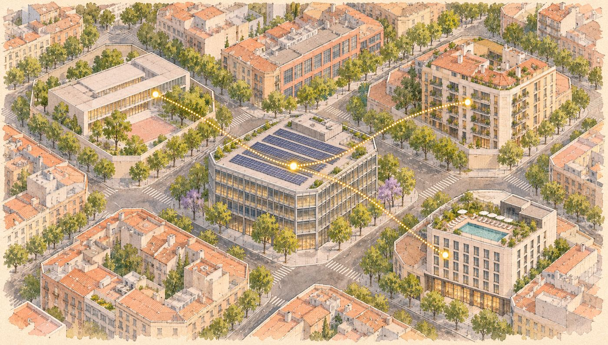

One roof. Four rhythms.
A better energy match.
An architectural decision-support tool that connects rooftop PV potential, hourly electricity demand, and hypothetical collective self-consumption.

Different hours. Different needs.
ILLUSTRATIVE_NOT_SIMULATED · normalized activity (0–1), not kWh.
The A160 cluster
Read-only repository dashboard. Source timestamps loading. Provisional scenario outputs are visually separated from observed data. Source repository ↗
Understand the roof
before placing a panel.
Reuse the original LiDAR and panel-layout workflow. Separate the roof's theoretical historical potential from space remaining after the existing installation.
Roof feasibility layers
Repository GeoJSONReal WGS84 polygons, shown with a local metric projection. Existing PV reference is kept separate. Open the annotated comparison ↗.
Scenario results
PreliminaryPredicted hypothetical capacity for the upper roof, not actual installed kWp.
Additional rooftop potentialAwaiting repository data.
- Hypothetical panel count
- Pending
- Retrospective eligible roof
- Pending
- Image-derived observed panel coverage
- Pending
- Spatial overlap (IoU)
- Pending
- Installed capacity
- Not verified
Turn a PV system
into an hourly energy story.
PVGIS estimates how much electricity panels may generate over time. The production model is available; A160's installed module specifications are not yet verified.
Solar model pipeline
Model-basedExpected generation
No PVGIS series importedOnce existing A160 panel capacity and PVGIS settings are confirmed, the chart can show summer/winter production and compare it with electricity demand.
Data requirements
- Location
- Barcelona · A160
- Existing installed kWp
- Unknown
- Module angle / aspect
- To verify
- System losses
- To specify
- Weather years / time basis
- To specify
Teach the model how
buildings use electricity.
EnergyPlus first simulates building behavior. An XGBoost model learns to approximate that reference simulator across tested operating configurations.
Awaiting split manifest
Repository-reported labeled hourly intervals
Awaiting benchmark CSV
Building rhythm explorer
Change the building type and the hour. All curves are illustrative.
ILLUSTRATIVE_NOT_SIMULATED · normalized activity (0–1). Schedule hypotheses only; not meters, EnergyPlus outputs or hourly kWh.
What the AI knows
Restricted domainWho should receive
the solar electricity?
A research comparison of different pre-agreed accounting allocations. Not a real-time smart grid, not a trading platform, and not confirmation of legal participation.
Choose a comparison strategy
This changes the scenario definition shown on the right; it does not calculate a live energy allocation.
Host-only self-consumption
HypotheticalThe reference case: A160 uses its own solar output. Other buildings receive no allocated share.
Scenario performance
Awaiting aligned hourly PV + demandkWh / year
kWh vs baseline
Per participant
More solar is not
automatically more impact.
The result should be an evidence-backed comparison of environmental, economic and distributional outcomes, including cases where the community provides no additional benefit.
Environmental
Did the community change the amount of solar used, grid electricity imported or emissions avoided?
Economic
Compare approximate energy savings, installation costs and financial benefit by participant.
Social / distribution
Which building receives what share, under which assumptions, and how does that change?
How the outcomes are calculated
Every number needs
a traceable source.
The project distinguishes measured observations, estimates from established models, and hypothetical design choices. These links show the foundations of the interface.
Evidence labels used in the interface
A municipal modeled roof estimate is not a measurement; an orthophoto proves visible arrays, not their rated power; a model test on a reference office does not establish A160 prediction accuracy.